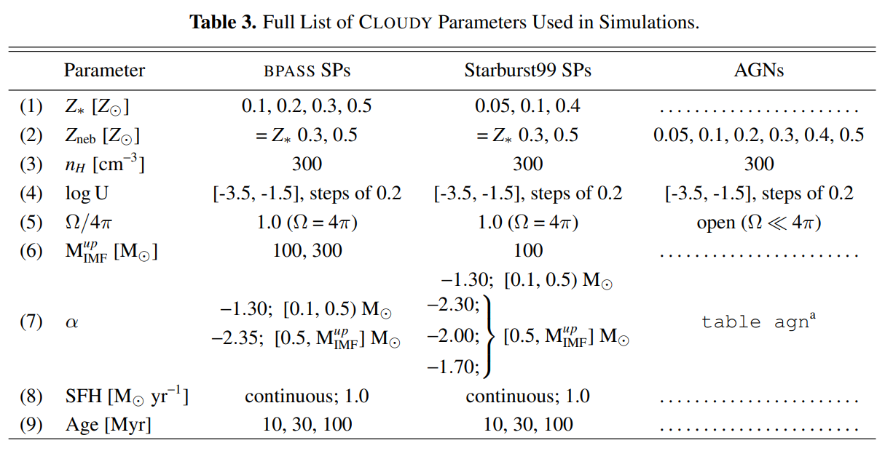

 Below we share some of the photoionization modeling described in Hutchison et al. 2019. The model parameters used are in Table 3 (pg. 11), but are also summarized here. Any questions can be directed to aibhleog@tamu.edu. The models assume Solar abundances and do not include depletion of onto dust grains. We investigated different input ionizing continuum — BPASS stellar population models (both single and binary), Starburt99 stellar poplation models, and AGN models using the table agn command in Cloudy. The table rows are as follows: (1) Stellar metallicity of the SPs, Z*. (2) Nebular metallicity used for each Z* and AGN model. (3) Total Hydrogen density. (4) Ionization parameter ranging from -3.5 to -1.5 in increments of 0.2. (5) Covering factor, where 1.0 defines a closed geometry. (6) IMF upper mass limit for the SPs. (7) Powerlaw slopes of the IMFs and the AGN models. (8) Star formation histories. (9) Age of the SPs.
For the work focusing on the CIV detection in Hutchison et al. (in prep), we compared the measured offsets of the emission part of the CIV line in our photoionization modeling. Since the restframe wavelength separation of the CIV doublet is ~3Å, the the lines are blended in the Cloudy photoionization models. The models below show the CIV feature as a function of stellar population, IMF upper mass limit, metallicity, and ionization.
Models with IMF that extends to 300 Solar masses, walking through stellar metallicity (note that nebular mellicity is fixed to stellar metallicity for these models).
Models with IMF that extends to 100 Solar masses, walking through stellar metallicity (note that nebular mellicity is fixed to stellar metallicity for these models)
Models with IMF that extends to 300 Solar masses, walking through stellar metallicity (note that nebular mellicity is fixed to stellar metallicity for these models).
Models with IMF that extends to 100 Solar masses, walking through stellar metallicity (note that nebular mellicity is fixed to stellar metallicity for these models)
Note: If you would like to see one of these images in larger detail, either maximize your window or right click on the image and click "Open Image in New Tab".